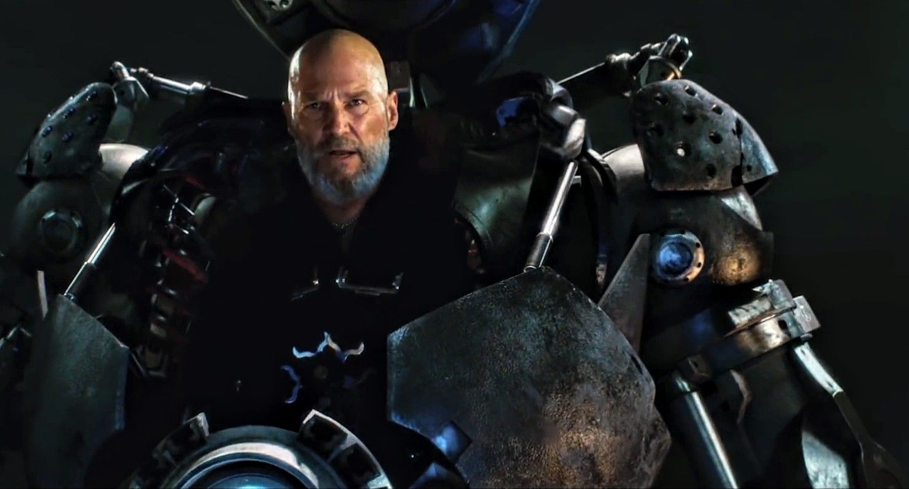
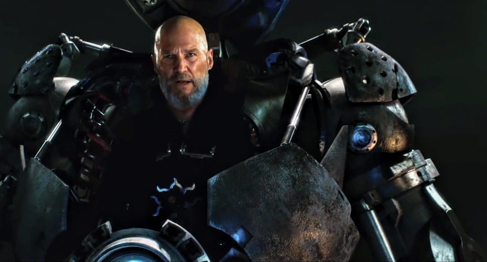

Listen to Downey Jr's Latest EXCLUSIVE Interview
Robert
Downey Jr. has evolved into one of the most respected actors in Hollywood. With
an amazing list of credits to his name, he has managed to stay new and fresh even
after over four decades in the business. Downey was born April 4, 1965 in
Manhattan, New York, the son of writer, director and filmographer Robert Downey
Sr. and actress Elsie Downey (née Elsie Ann Ford). Downey Jr. made his debut as
an actor at the age of five in the film Pound (1970), written and directed by his
father, Robert Downey Sr.. He built his film repertoire throughout the 1980s and
1990s with roles in Tuff Turf (1985), Weird Science (1985), True Believer (1989),
and Wonder Boys (2000) among many others. In 1992, Downey received an Academy
Award nomination and won the BAFTA (British Academy Award) for Best Actor for his
performance in the title role of Chaplin (1992).
Listen to Paltrow's Latest EXCLUSIVE Interview
A tall,
wafer thin, delicate beauty, Gwyneth Kate Paltrow was born in Los Angeles, the
daughter of noted producer and director Bruce Paltrow and Tony Award-winning
actress Blythe Danner. Her father was from a Jewish family, while her mother is
of mostly German descent. She made her film debut with a small part in Shout
(1991) and for the next five years had featured roles in a mixed bag of film
fare that included Flesh and Bone (1993); Mrs. Parker and the Vicious Circle
(1994); Seven (1995); Jefferson in Paris (1995); Moonlight and Valentino (1995);
and The Pallbearer (1996). It was her performance in the title role of Emma
Woodhouse in Emma (1996) that led to her being offered the role of Viola in
Shakespeare in Love (1998), for which she was awarded the Golden Globe, Screen
Actors Guild and Academy Awards for Best Actress in a Leading Role. Her roles
have also included The Royal Tenenbaums (2001), Shallow Hal (2001), Sky Captain
and the World of Tomorrow (2004), Iron Man (2008), Two Lovers (2008), and
Country Strong (2010). She has two children with her former husband, English
musician Chris Martin.
 

Listen to Bridge's Latest EXCLUSIVE Interview
Jeffrey
Leon Bridges was born on December 4, 1949 in Los Angeles, California, the son
of well-known film and TV star Lloyd Bridges and his long-time wife Dorothy
Dean Bridges (née Simpson). He grew up amid the happening Hollywood scene with
big brother Beau Bridges. He recovered and began shaping his nascent young
adult career appearing on TV as a younger version of his father in the
acclaimed TV- movie Silent Night, Lonely Night (1969), and in the strange
Burgess Meredith film The Yin and the Yang of Mr. Go (1970).


Listen to Howard's Latest EXCLUSIVE Interview
Terrence
Howard was born in Chicago, Illinois, to Anita Jeanine Williams (née Hawkins)
and Tyrone Howard. He was raised in Cleveland, Ohio. His love for acting came
naturally, through summers spent with his great-grandmother, New York stage
actress Minnie Gentry. He later began his acting career after being discovered
on a New York City street by a casting director. Soon, he followed with several
notable TV appearances on shows such as Living Single (1993), NYPD Blue (1993)
and Soul Food (2000). He became well known for his lead role in the UPN TV
series Sparks (1996).